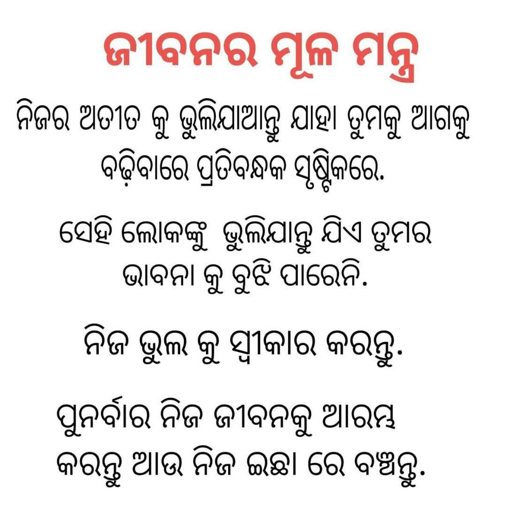
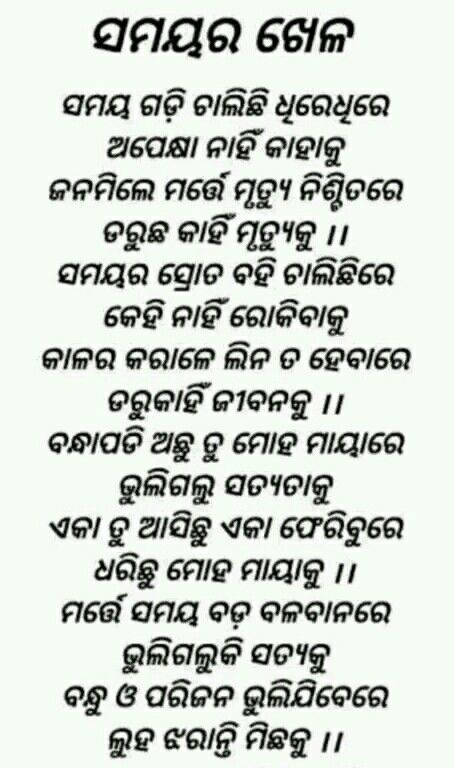
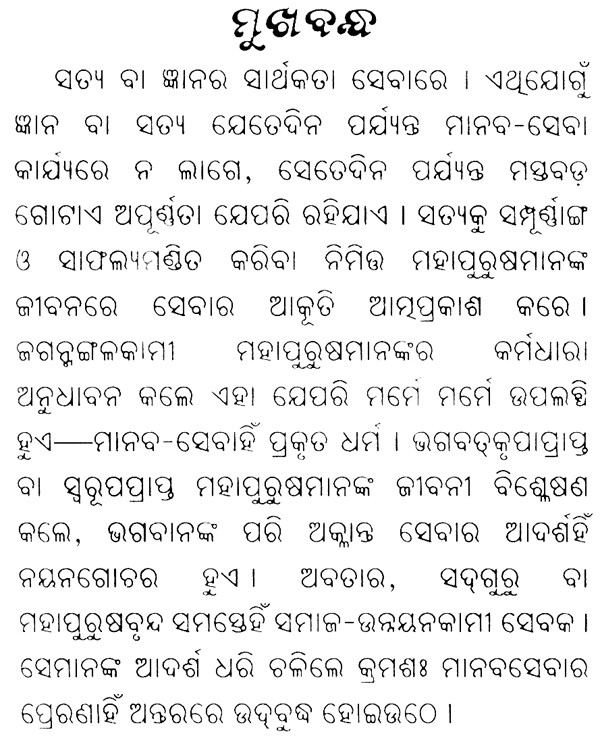
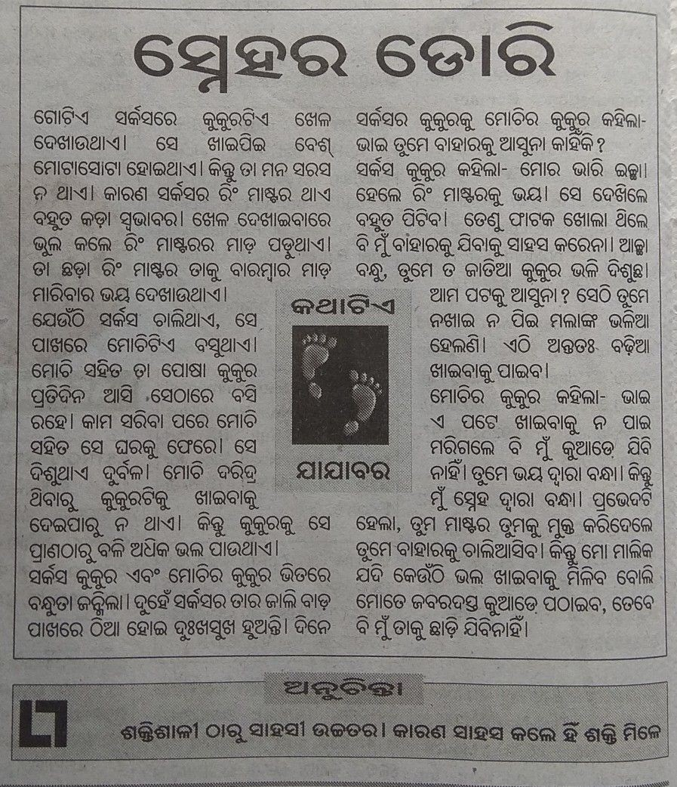

Evaluating checkpoint-1300 of our LoRA fine-tuned model on 6 diverse samples from the Iftesha/odia-ocr-benchmark dataset — digital quotes, poems, book text, and newspaper stories.
6 samples spanning short digital text to long newspaper articles — ordered from best to worst performance.




All 6 samples ranked by accuracy.
What these results tell us about the model's capabilities and limitations.
Excels on clean digital Odia typography — decorative quote images (97.4%), rendered poem graphics (92.9%, 91.0%). The model correctly handles complex Odia conjunct consonants (ର୍ + ୟ, ଣ + ତ, ପ + ର) in digital contexts, showing that LoRA fine-tuning has successfully transferred deep Odia character knowledge.
Performance degrades with graphic overlays (news thumbnail: 76.1%), dense printed book pages (73.4%), and long newspaper columns (34.2%). The main failure mode is output truncation — the model stops generating before completing the full text, not character confusion.
Average accuracy on this benchmark: 77.5% vs 29.4% on historical Odia manuscript scans. The gap highlights that the model is trained primarily on modern digital content — exposure to historical typography and physical scan noise was limited in the training data.
Key improvements to target: (1) Increase max generation tokens to reduce truncation on long passages, (2) Add newspaper and multi-column layout samples to training data, (3) Fine-tune on printed book scans with diacritics-heavy Sanskrit vocabulary, (4) Post-process common substitution pairs (।↔., ্ ↔ matras).